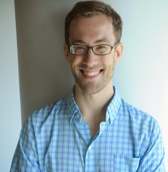

Associate Professor
Vice Chair & Director of Graduate Studies
Address:
Department of LinguisticsUniversity of California, Los Angeles
3125 Campbell Hall
Los Angeles, CA 90095
United States
Email:
keine@ucla.eduOffice hours (Fall 2025):
TuTh 15:00–16:003103H Campbell Hall
[ CV ]

Papers
[recent manuscripts]
-
Silencing the PCC
[pdf]
[w/ Jon Ander Mendia]
Ms., UCLA & UPV/EHU.
[to appear]
-
Φ-Feature sharing
[pdf]
The Cambridge Handbook of Minimalism, ed. by K. Grohmann & E. Leivada. Cambridge: CUP. -
Impoverishment
[pdf]
[w/ Gereon Müller]
The Cambridge Handbook of Distributed Morphology, ed. by A. Alexiadou, R. Kramer, A. Marantz & I. Oltra-Massuet. Cambridge: CUP.
[2025]
-
Crossover asymmetries
[pdf]
[w/ Rajesh Bhatt]
STAR: Syntactic Theory and Research 1.1.3, 1–58 -
Clause-internal successive cyclicity: phasality or DP intervention?
[pdf]
[w/ Hedde Zeijlstra]
Natural Language & Linguistic Theory 43, 1119–1182.
[2024]
-
Not all reconstruction effects are syntactic
[pdf]
[w/ Ethan Poole]
Natural Language & Linguistic Theory 42, 1677–1725. -
More on (the lack of) reconstruction in
English tough-constructions
[link; prefinal
pdf]
[w/ Ethan Poole & Jon Ander Mendia]
Linguistic Inquiry 55, 871–884.
[2022]
-
Movement and cyclic Agree
[pdf]
[w/ Bhamati Dash]
Natural Language & Linguistic Theory 41, 679–732. -
Person restrictions depend on overt agreement, not nominal licensing
[pdf]
[w/ Will Oxford & Jessica Coon]
Proceedings of NELS 52, Vol. 2, ed. by B. Pratley, Ö. Bakay, E. Neu & P. Deal. Amherst, MA: GLSA, 139–148.
[2021]
-
Feature gluttony
[pdf]
[w/ Jessica Coon]
Linguistic Inquiry 52, 655–710.
[2020]
-
Probes and Their Horizons [link]
Linguistic Inquiry Monograph 81. MIT Press, Cambridge, MA. -
Locality domains in syntax: Evidence from sentence processing
[link; prefinal pdf;
suppl.
materials]
Syntax 23, 105–151.
[2019]
-
Hierarchy effects in copula constructions
[link; prefinal pdf]
[w/ Michael Wagner & Jessica Coon]
Canadian Journal of Linguistics 64, 617–648. -
Selective opacity
[pdf]
Linguistic Inquiry 50, 13–62. -
Secondary strong crossover in Hindi and the typology of movement [pdf]
[w/ Rajesh Bhatt]
Proceedings of NELS 49, Vol. 1. ed. by M. Baird & J. Pesetsky. Amherst: GLSA, p. 125–134.
[2018]
-
Case vs. positions in the locality of
A-movement
[pdf]
Glossa 3, 138. -
The cyclicity of φ-Agree: Evidence from
scrambling [pdf]
[w/ Bhamati Dash]
Proceedings of NELS 48. ed. by S. Hucklebridge & M. Nelson. Amherst: GLSA, p. 91–104. -
Interpreting long scrambling in
Hindi-Urdu [pdf]
[w/ Ethan Poole]
Proceedings of NELS 48. ed. by S. Hucklebridge & M. Nelson. Amherst: GLSA, p. 105–118. -
Tense and the realization of the feminine plural
in Hindi-Urdu
[prefinal pdf]
[w/ Rajesh Bhatt]
Perspectives on the Architecture and Acquisition of Syntax: Essays in Honour of R. Amritavalli. ed. by G. Sengupta, S. Sircar, M. Gayathri Raman & R. Balusu. Springer, Dordrecht, p. 49–76.
[2017]
-
Long-distance agreement
[link; prefinal pdf]
[w/ Rajesh Bhatt]
The Wiley Blackwell Companion to Syntax, 2nd Edition, Vol. IV. ed by M. Everaert & H. van Riemsdijk. Blackwell-Wiley, Hoboken, NJ, p. 2291–2321. -
Intervention in tough-constructions
revisited
[link; prefinal
pdf]
[w/ Ethan Poole]
The Linguistic Review 34: 295–329. -
Hierarchy effects in copular constructions: The
PCC corner of German
[pdf]
[w/ Jessica Coon & Michael Wagner]
Proceedings of NELS 47. ed. by A. Lamont & K. Tetzloff. Amherst: GLSA, p. 205–214. -
Agreement and vP phases
[pdf]
A Schrift to Fest Kyle Johnson [link]. ed. by N. LaCara, K. Moulton & A.-M. Tessier. University of Massachusetts Amherst: Linguistics Open Access Publications 1, p. 177–185.
[2016]
-
Probes and their horizons
[pdf]
Dissertation, University of Massachusetts Amherst. -
Interpreting verb clusters
[link]
[w/ Rajesh Bhatt]
Natural Language & Linguistic Theory 34: 1445–1492.
[2015]
-
Verb clusters and the semantics of head
movement
[pdf]
[w/ Rajesh Bhatt]
Proceedings of WCCFL 32. ed. by U. Steindl, T. Borer, H. Fang, A. García Pardo, P. Guekguezian, B. Hsu, C. O'Hara & I. C. Ouyang. Cascadilla Press, Somerville, MA, p. 82–91. -
Differential argument encoding by
impoverishment
[link; prefinal
pdf]
[w/ Gereon Müller]
Scales and Hierarchies: A Cross-Disciplinary Perspective. ed. by I. Bornkessel-Schlesewsky, A. Malchukov & M. Richards. de Gruyter, Berlin, p. 75–130.
[2014]
-
Complete and defective agreement in Kutchi
[link; prefinal
pdf]
[w/ Trupti Nisar & Rajesh Bhatt]
Linguistic Variation 14: 243–288.
[2013]
-
Deconstructing switch-reference
[link]
Natural Language & Linguistic Theory 31: 767–826. -
Syntagmatic constraints on insertion
[pdf]
Morphology 23: 201–226. -
On the role of movement in Hindi/Urdu
long-distance agreement
[pdf]
Proceedings of NELS 42. ed. by S. Keine & S. Sloggett. GLSA, Amherst, p. 273–284.
[2012]
-
How complex are complex words? Evidence from
linearization
[prefinal
pdf]
Lingua 122: 1268–1281.
[2011]
-
Non-zero/non-zero alternations in differential
object marking
[pdf]
[w/ Gereon Müller]
Proceedings of NELS 39. ed. by S. Lima, K. Mullin & B. Smith. GLSA, Amherst, p. 441–454.
[2010]
-
Case and Agreement from Fringe to Core: A
Minimalist Approach
[link]
de Gruyter, Berlin. -
Does chain hybridization in Irish support
movement-based approaches to long-distance dependencies?
[pdf]
[w/ Anke Assmann, Fabian Heck, Johannes Hein & Gereon Müller]
Proceedings of the HPSG10 Conference. ed. by S. Müller. CSLI, Stanford, p. 27–46.
[2007]
-
Reanalyzing Hindi split-ergativity as a
morphological phenomenon
[pdf]
1 2 many. ed. by J. Trommer & A. Opitz. Universität Leipzig: Linguistische Arbeitsberichte 85, p. 73–127.